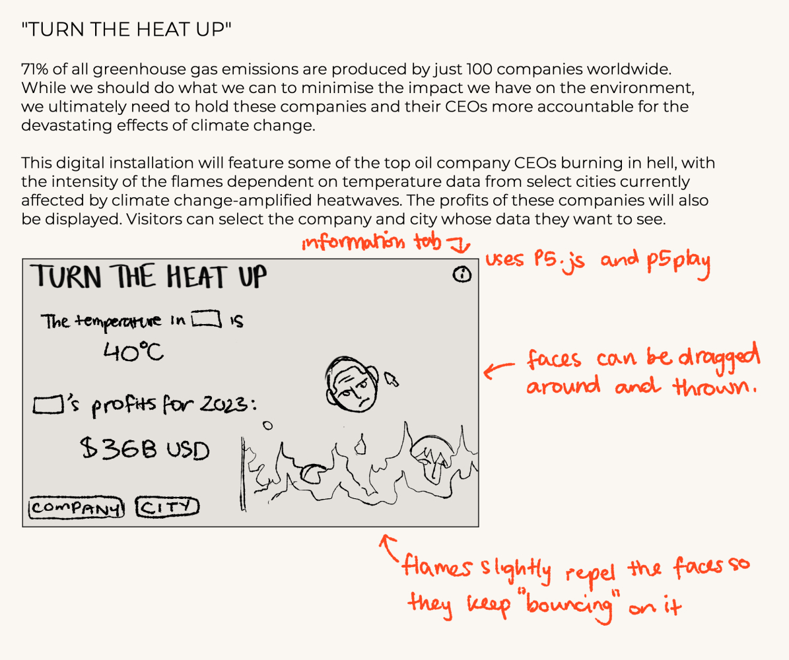

Preparing for my personal project, I sketched some devices I could make using Arduino components. While all of these would be feasible to create, I pivoted towards making a purely digital installation due to time constraints. Inspired by the ongoing climate change-induced heatwaves in my home country of Vietnam (also affected much of Southeast Asia), I wanted to create a piece with a strong environmental message.
I enjoyed using the p5play library for my Project 2B, particularly the physics engine, so I wanted to use it again for my final project. If I have the time, I could potentially incorporate live temperature data into the website by using API, or allow users to select a location from an embedded map instead of a dropdown list.